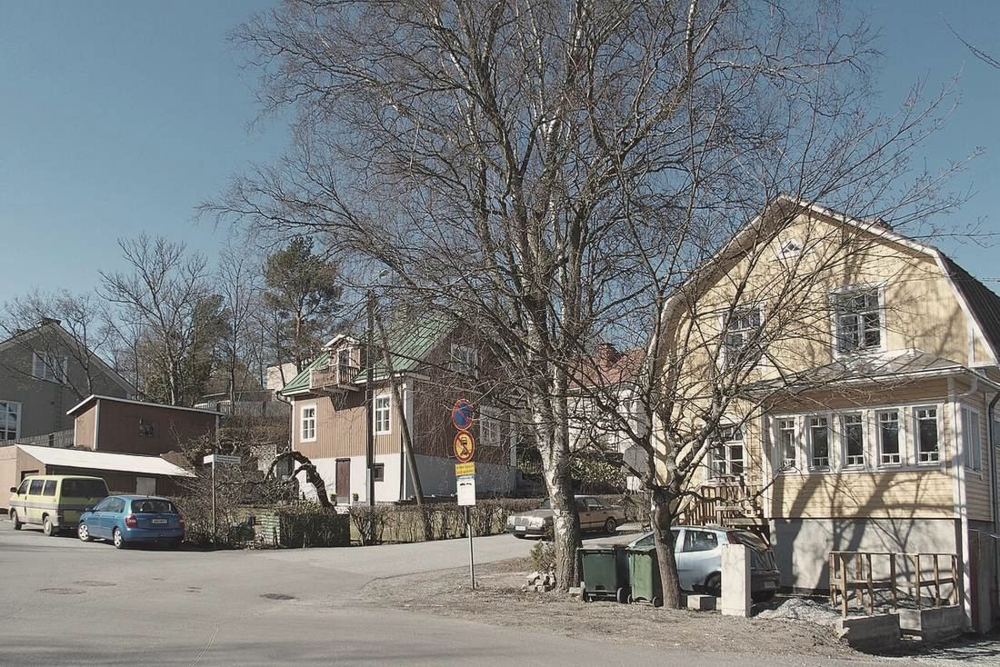

Port Arthur, Turku
Yhteystiedot
Kerro osoite, huoneet ja toivottu aikataulu. Jos sinulla on kuva huoneesta sellaisena kuin se nyt on, lähetä se sähköpostilla. Vastaamme kahden arkipäivän kuluessa.
- Toimisto
- Studio Utu Oy
Utukatu 5
20100 Turku - Käynnit
- Sovitusti. Toimistolla ei ole vastaanottoa.
- Sähköposti
- studio@studio-utu.example
- Puhelin
- 048 562 1925
- Vastausaika
- 2 arkipäivää
- Toimialue
- Turku ja Varsinais-Suomi
- Y-tunnus
- 3184525-0
- Verkkolasku
- 003731845250
